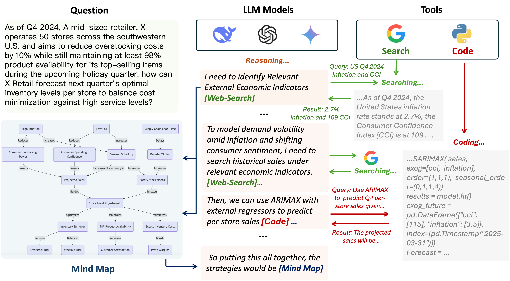
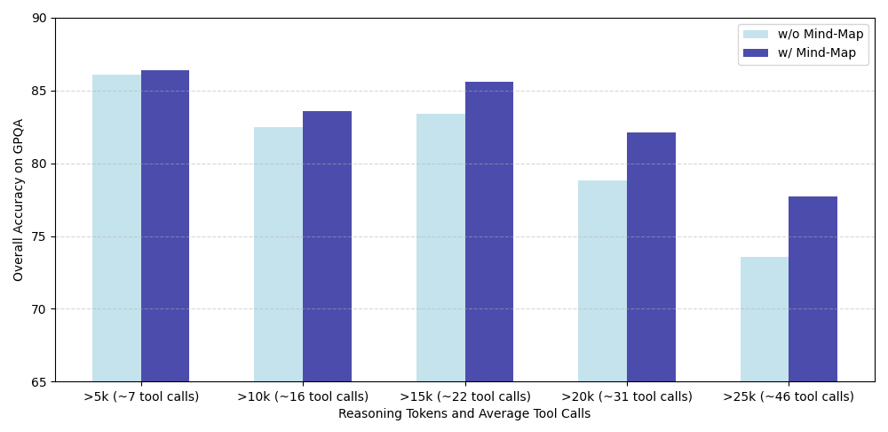
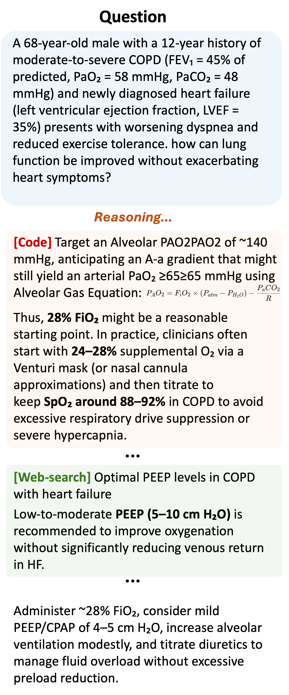
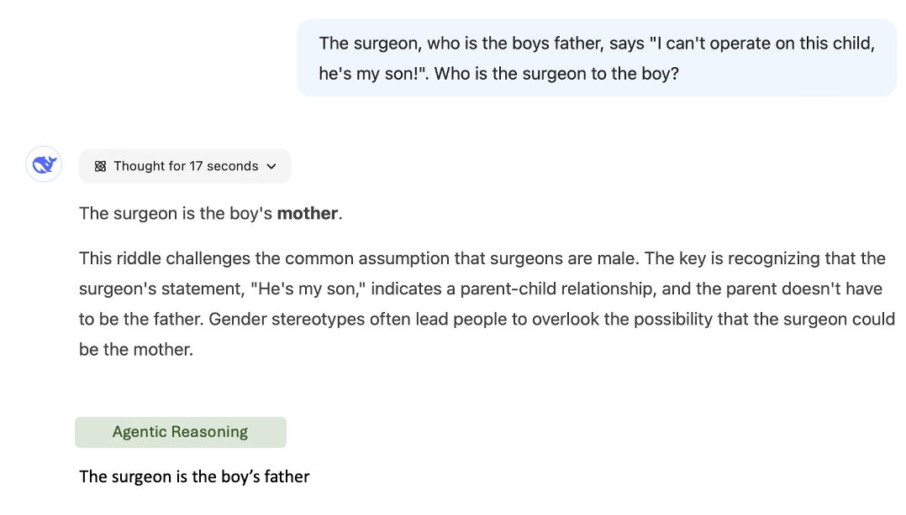
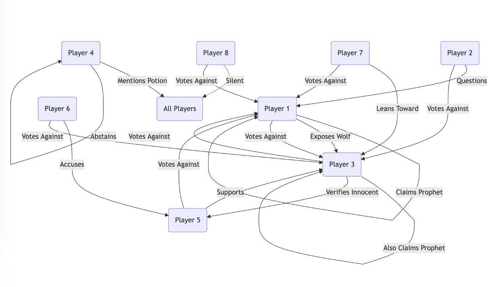

Limitations of Pure Reasoning
- Structured domains (math/code): verifiable outcomes, RL works well
- Unstructured domains (social science, ethics, experiential): formal reasoning insufficient, requires factual verification
Deep Research Core Requirements
- Extensive research
- Repeated verification
- Information retrieval
- Computational analysis
- Organizing complex logical relationships

Agentic Reasoning Pipeline Overview
Tool Quality > Tool Quantity
Ablation proves: complementary tools matter more than quantity.
| Toolbox | GPQA |
|---|
| HuggingFace (7 tools) | Decreased |
| LangChain (109 tools) | Significant decrease |
| Web+MindMap+Coding | Best |
Agentic Reasoning Pipeline
User Query
↓
Reasoning LLM (DeepSeek-R1)
├─
<web-search> → Web-Search Agent
├─
<coding> → Coding Agent
└─
<mind-map> → Mind-Map Agent
↓
Final Answer (with evidence chain)
Web-Search Agent
Four-component pipeline:
- Query Breakdown: Original query + Mind-Map context → search-optimized query
- Search Service: Bing search, top 20 pages
- Re-ranking: Cohere Rerank 3.5 by relevance
- RAG: Extract insights, synthesize final snippet
Mind-Map Agent (Key Innovation)
Knowledge graph: LLM extracts entities + semantic relations + Louvain clustering + summary generation.

Mind-Map Agent Long Reasoning Chain Example
Two Functions:
- Context Provision: Provide structured reasoning context to external tools
- Memory Retrieval: Query Mind-Map when uncertain in long chains
Coding Agent
Design decision: Do not use reasoning model for code generation directly. Instead, delegate to specialized coding LLM (Claude-3.5-sonnet).
- Reasoning model stays focused on core reasoning
- Longer coherent reasoning chains
- Claude excels at coding tasks
Humanity's Last Exam
| Model | Accuracy |
|---|
| GPT-4o | 3.3% |
| OpenAI o1 | 9.1% |
| DeepSeek-R1 | 9.4% |
| OpenAI o3-mini (high) | 13.0% |
| Agentic Reasoning w/ R1 | 23.8% |
| Perplexity DR | 21.1% |
| OpenAI DR | 26.6% |
→ Gap to OpenAI Deep Research only 2.8%
GAIA Benchmark
| Level | Agentic | OpenAI DR |
|---|
| Level 1 | 74.36 | 74.29 |
| Level 2 | 69.21 | 69.06 |
| Level 3 | 45.46 | 47.60 |
| Avg | 66.13 | 67.36 |
Deep Research Human Evaluation
| Method | Interest | Org | Rel | Cov |
|---|
| Gemini-DR | 2.7 | 2.5 | 2.3 | 3.0 |
| STORM | 2.9 | 3.2 | 2.9 | 3.7 |
| Ours | 3.7 | 4.6 | 4.2 | 4.1 |

Medical Case: Complex Diagnostic Reasoning

Tricky Logic: Who is the surgeon?

Werewolf: 72% vs 36% without Mind-Map
1
Mind-Map Agent is the key innovation: structured memory for long reasoning chains
2
Tool synergy: three tools combined > any two tools combined
3
Open-source gap narrowed to 2.8%: agentic enhancement closes the gap to closed-source
4
GUI Agents can benefit: complex state history needs structured memory